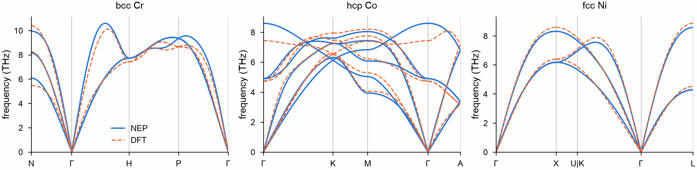
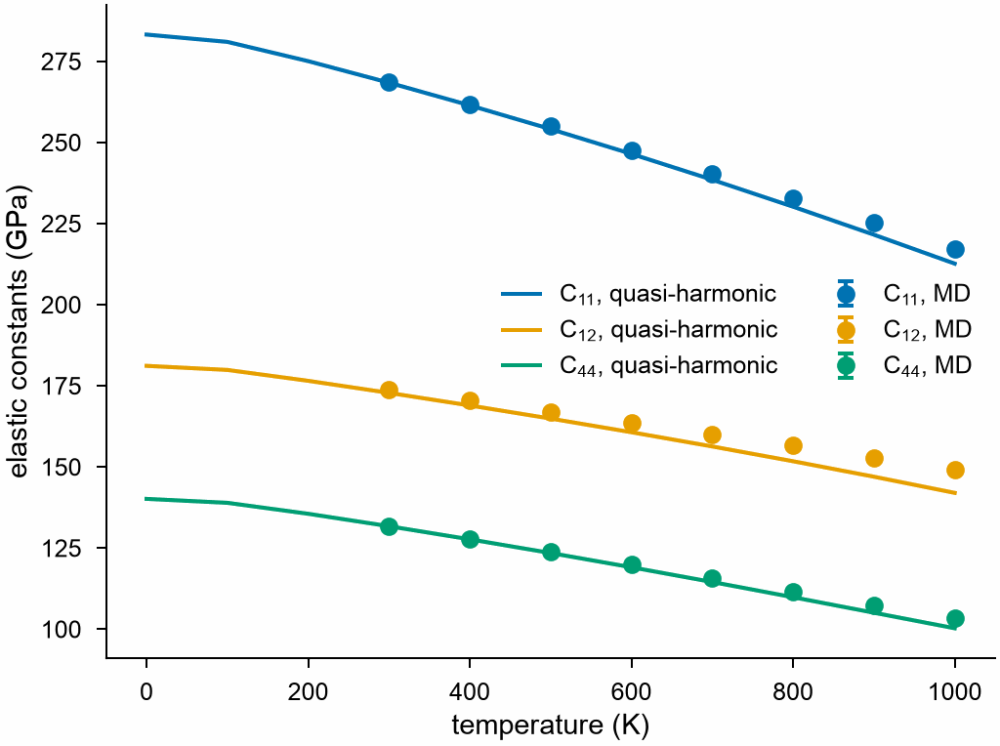
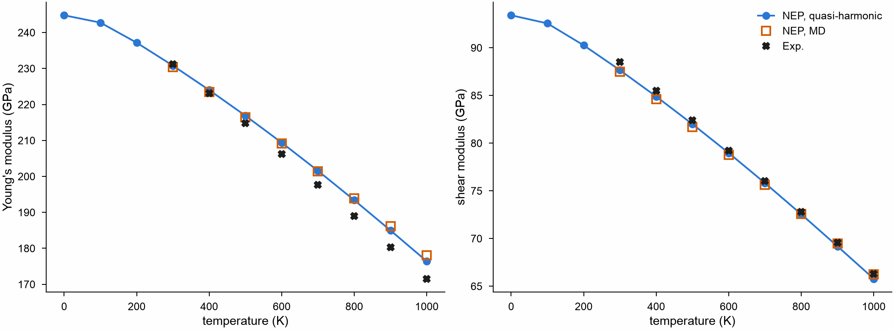

A machine-learned potential for CrCoNi¶
A machine-learned potential is checked against the first-principles calculations it learned from, and against measurements. This page takes the NEP model for CrCoNi alloys of Wu et al. (2026) and computes the phonon dispersions of bcc Cr, hcp Co and fcc Ni, drawn over the DFT dispersions (VASP and phonopy) of the same paper, and the elastic constants of the CrCoNi alloy from 0 to 1000 K, against measured ones. See Phonons, Quasi-harmonic approximation and Elastic constants at finite temperature for the functions themselves.
Cite the model and the data
The NEP model and the DFT dispersions come from Wu et al. (2026). Cite that paper when you use them.
Download the model nep.txt (a copy of the one in the
NEP-CrCoNi repository, which
also holds the training data) and the DFT dispersions
Cr.band.dat, Co.band.dat and
Ni.band.dat, and SQS.xyz, a
special quasirandom structure of equiatomic CrCoNi with 108 atoms, into the
working directory.
Phonons of Cr, Co and Ni¶
The crystals¶
Relax the conventional cell of each metal at zero pressure with the model, and reduce it to its primitive cell:
import numpy as np
from mdapy.build import build_crystal
from mdapy.calculators import NEP
from mdapy.lattice_dynamics import phonons, primitive_cell
from mdapy.simulation import minimize
nep = NEP("nep.txt")
def relaxed(element, structure, a):
"""The conventional cell of a metal, relaxed at zero pressure."""
start = build_crystal(structure, a, elements=element)
return minimize(start, nep, cell="full", max_force=1e-6, max_stress=1e-5).system
conventional = {
"Cr": relaxed("Cr", "bcc", 2.84),
"Co": relaxed("Co", "hcp", 2.49),
"Ni": relaxed("Ni", "fcc", 3.52),
}
primitive = {element: primitive_cell(cell) for element, cell in conventional.items()}
for element, cell in conventional.items():
print(element, np.round(np.linalg.norm(cell.box.matrix, axis=1), 4))
Phonons¶
The force constants come from displacements of the atoms in a supercell, by default the most nearly cubic one at least twice the cutoff of the model across:
results = {element: phonons(cell, nep) for element, cell in primitive.items()}
for element, result in results.items():
print(element, result)
Cr Phonons(1 atom, supercell of 250 cells)
Co Phonons(2 atoms, supercell of 90 cells)
Ni Phonons(1 atom, supercell of 256 cells)
Along the paths of the DFT calculations¶
The DFT dispersions follow the paths below. Their special points are given in units of the reciprocal vectors of the conventional cells; a matrix takes them to those of the primitive cells. The DFT path of Ni goes from U to K, two equivalent points of the Brillouin zone, as a line of its own; here the path breaks at U and starts again at K.
paths = {
"Cr": [[("N", [0.5, 0.5, 0]), ("Γ", [0, 0, 0]), ("H", [0, 1, 0]),
("P", [0.5, 0.5, 0.5]), ("Γ", [0, 0, 0])]],
"Co": [[("Γ", [0, 0, 0]), ("K", [1 / 3, 1 / 3, 0]), ("M", [0.5, 0, 0]),
("Γ", [0, 0, 0]), ("A", [0, 0, 0.5])]],
"Ni": [[("Γ", [0, 0, 0]), ("X", [0, 1, 0]), ("U", [0.25, 1, 0.25])],
[("K", [0.75, 0.75, 0]), ("Γ", [0, 0, 0]), ("L", [0.5, 0.5, 0.5])]],
} # fmt: skip
sections, bands = {}, {}
for element, path in paths.items():
to_primitive = primitive[element].box.matrix @ np.linalg.inv(
conventional[element].box.matrix
)
sections[element] = [[(name, to_primitive @ q) for name, q in s] for s in path]
bands[element] = results[element].band_structure(sections[element], points=101)
Against DFT¶
read_band_structure reads the band.dat files of phonopy. Each line
between two special points has 101 wave vectors in both, so the
frequencies compare point by point; the DFT lines are stretched onto the
lines of the model, whose lattice constants differ a little.
from mdapy.lattice_dynamics import read_band_structure
dft = {element: read_band_structure(f"{element}.band.dat") for element in paths}
def lines(bands):
"""The distances and frequencies of each line between two special points."""
n = len(bands.distances) // 101
return list(zip(np.split(bands.distances, n), np.split(bands.frequencies, n)))
on_path = {}
for element in paths:
theirs = lines(dft[element])
if element == "Ni":
del theirs[2] # the line from U to K
on_path[element] = [
(np.interp(d, d[[0, -1]], x[[0, -1]]), frequencies)
for (x, _), (d, frequencies) in zip(lines(bands[element]), theirs)
]
difference = np.concatenate(
[f - g for (_, f), (_, g) in zip(lines(bands[element]), on_path[element])]
)
print(f"{element}: {np.sqrt(np.mean(difference**2)):.2f} THz root mean square")
from mdapy.visualization import plot
with plot.style():
fig, axes = plot.figure("double", ncols=3)
for ax, element, title in zip(axes, paths, ("bcc Cr", "hcp Co", "fcc Ni")):
plot.band_structure(bands[element], ax=ax, color="#2a78d6")
for x, frequencies in on_path[element]:
ax.plot(x, frequencies, color="#eb6834", lw=0.8, ls="--")
ax.set_title(title)
ax.set_ylim(0, None)
axes[0].plot([], [], color="#2a78d6", label="NEP")
axes[0].plot([], [], color="#eb6834", lw=0.8, ls="--", label="DFT")
axes[0].legend(frameon=False)
plot.save(fig, "images/crconi-phonons", formats=("png",))

Converged with the supercell?¶
Force constants beyond the supercell are left out. Check the dispersion of Ni in a supercell of 6 × 6 × 6 conventional cells, given as a matrix of primitive cells:
matrix = 6 * conventional["Ni"].box.matrix @ np.linalg.inv(primitive["Ni"].box.matrix)
larger = phonons(primitive["Ni"], nep, supercell=np.rint(matrix).astype(int))
again = larger.band_structure(sections["Ni"], points=101)
change = np.abs(again.frequencies - bands["Ni"].frequencies).max()
print(larger, f"{change:.3f} THz")
The default supercell is converged to some hundredths of a THz, well below the differences from DFT; the largest of those, the highest optical branch of Co at Γ, is the model's own.
Elastic constants of CrCoNi¶
At 0 K¶
Relax the special quasirandom structure at zero pressure, and compute its elastic constants from the stress under small strains, the atoms relaxed under each. The cell is cubic on average; average the constants over the three equivalent directions:
from mdapy.io import read
from mdapy.lattice_dynamics import ElasticResult, elastic_constants
start = read("SQS.xyz")
sqs = minimize(
start, nep, cell="full", max_force=1e-6, max_stress=1e-5, max_steps=20000
).system
def cubic(c):
"""C11, C12 and C44 averaged over the equivalent directions."""
return (
np.mean(np.diag(c)[:3]),
np.mean(c[[0, 0, 1], [1, 2, 2]]),
np.mean(np.diag(c)[3:]),
)
static = elastic_constants(sqs, nep, max_force=1e-6)
print("C11 %.1f, C12 %.1f, C44 %.1f GPa" % cubic(static.constants))
From 0 to 1000 K¶
The quasi-harmonic approximation
gives the volume of the crystal at each temperature from the free energy
of its vibrations, and
thermal_elastic_constants the
elastic constants there, from the second derivatives of the static energy
and of the free energy of the vibrations under strain. The structure, 10.6 Å
across, is taken as its own supercell to keep this affordable; it takes
about 10 minutes on ten cores.
from mdapy.lattice_dynamics import quasi_harmonic, thermal_elastic_constants
temperatures = np.arange(0, 1001, 100.0)
qha = quasi_harmonic(sqs, nep, temperatures, supercell=1, mesh=4)
thermal = thermal_elastic_constants(qha, nep, supercell=1, mesh=4)
print("0 K: C11 %.1f, C12 %.1f, C44 %.1f GPa" % cubic(thermal.isothermal[0]))
print(
f"{qha.volume[0] * len(sqs) / sqs.box.volume - 1:.2%} larger than the static cell"
)
At 0 K the two methods differ by 2 to 3 % on the same structure: the
vibrations of the atoms at zero point expand the crystal by 0.5 %, which
softens it, while the strains of elastic_constants act on the static
crystal. At the same volume, the second derivatives of the energy and the
stresses under strain give the same constants to 0.1 GPa.
From molecular dynamics¶
The quasi-harmonic approximation takes the anharmonic vibrations in only through the
volume. md_elastic_constants takes them all,
from the mean stress of molecular dynamics under small strains. Here it runs in LAMMPS
with the NEP of KOKKOS, pair_style nep/kk, on a GPU, in 4 × 4 × 4 copies of the
structure, 6912 atoms, for 120 ps under each of the 12 strains; each temperature takes
about 10 minutes on one GPU:
from mdapy.calculators import LAMMPS
from mdapy.lattice_dynamics import md_elastic_constants
from mdapy.transform import replicate
gpu = LAMMPS(
"pair_style nep/kk\npair_coeff * * nep.txt Cr Co Ni",
["Cr", "Co", "Ni"],
cmdargs=["-k", "on", "g", "1", "-sf", "kk", "-pk", "kokkos", "newton", "on", "neigh", "half"],
) # fmt: skip
crystal = replicate(sqs, (4, 4, 4))
hot = np.arange(300, 1001, 100.0)
md = [
md_elastic_constants(
crystal, gpu, t, timestep=0.002, equilibration=10000, production=50000
)
for t in hot
]
for t, result in zip(hot[::3], md[::3]):
print("%.0f K: C11 %.1f, C12 %.1f, C44 %.1f GPa" % (t, *cubic(result.constants)))
300 K: C11 268.6, C12 173.7, C44 131.8 GPa
600 K: C11 247.7, C12 163.5, C44 119.9 GPa
900 K: C11 225.2, C12 152.7, C44 107.4 GPa
Against the isothermal constants of the quasi-harmonic approximation:
quasi = np.array([cubic(c) for c in thermal.isothermal])
dynamic = np.array([cubic(result.constants) for result in md])
spread = np.array([cubic(result.errors) for result in md])
with plot.style():
fig, ax = plot.figure("single")
for k, name in enumerate(("C$_{11}$", "C$_{12}$", "C$_{44}$")):
(line,) = ax.plot(temperatures, quasi[:, k], label=f"{name}, quasi-harmonic")
ax.errorbar(hot, dynamic[:, k], spread[:, k], fmt="o", color=line.get_color(),
capsize=2, label=f"{name}, MD") # fmt: skip
ax.set_xlabel("temperature (K)")
ax.set_ylabel("elastic constants (GPa)")
ax.legend(ncol=2)
plot.save(fig, "images/crconi-md", formats=("png",))

The isothermal constants of CrCoNi with the NEP model: lines from the quasi-harmonic approximation, points from molecular dynamics, with their standard errors, smaller than the points. At 300 K the two agree to 1 GPa. Above, the constants of molecular dynamics soften more slowly: at 1000 K C11 is 217 against 213 GPa, C12 149 against 142 GPa and C44 104 against 100 GPa: the quasi-harmonic approximation, which takes the anharmonic vibrations in only through the volume, softens the crystal faster.
Molecular dynamics treats the atoms as classical, the quasi-harmonic approximation quantum mechanically, with their zero-point vibrations; from 300 K on the difference is small for the constants, and below it the quasi-harmonic constants are the ones to use.
Against measurements¶
Measurements of the elastic moduli by resonant ultrasound are adiabatic, too fast for heat to flow; take the adiabatic constants and their Voigt–Reuss–Hill averages, and compare them with the fits of Laplanche et al. (2018) to their measurements of CrCoNi. Molecular dynamics gives isothermal constants; the adiabatic ones differ by the heat that a strain releases, taken here from the quasi-harmonic approximation at the same temperature. In a cubic crystal the difference is the same in C11 and C12 and none in C44, so it leaves the shear modulus as it is and raises the bulk modulus alone:
def young_and_shear(constants):
"""Young's and shear moduli, averages of Voigt, Reuss and Hill."""
moduli = [ElasticResult(c) for c in constants]
bulk = np.array([m.bulk_modulus() for m in moduli])
shear = np.array([m.shear_modulus() for m in moduli])
return 9 * bulk * shear / (3 * bulk + shear), shear
young, shear = young_and_shear(thermal.adiabatic)
at = np.searchsorted(temperatures, hot)
heat = thermal.adiabatic[at] - thermal.isothermal[at]
young_md, shear_md = young_and_shear(np.array([r.constants for r in md]) + heat)
einstein = 1 / (np.exp(362 / hot) - 1)
young_measured, shear_measured = 244.9 - 32 * einstein, 93.6 - 11.9 * einstein
print("T (K) E: QHA MD measured G: QHA MD measured (GPa)")
for t in (300, 600, 900):
k, j = np.flatnonzero(temperatures == t)[0], np.flatnonzero(hot == t)[0]
print(
f"{t:5.0f} {young[k]:9.1f} {young_md[j]:6.1f} {young_measured[j]:8.1f}"
f" {shear[k]:8.1f} {shear_md[j]:5.1f} {shear_measured[j]:7.1f}"
)
with plot.style():
fig, axes = plot.figure("double", ncols=2)
for ax, model, dynamic, fit, name in zip(
axes,
(young, shear),
(young_md, shear_md),
(young_measured, shear_measured),
("Young's modulus (GPa)", "shear modulus (GPa)"),
):
ax.plot(temperatures, model, "-o", color="#2a78d6", label="NEP, quasi-harmonic")
ax.plot(hot, dynamic, "s", color="#d55e00", markerfacecolor="none",
markersize=5, label="NEP, MD") # fmt: skip
ax.plot(hot, fit, "X", color="#1f1f1e", label="Exp.")
ax.set_xlabel("temperature (K)")
ax.set_ylabel(name)
axes[1].legend(frameon=False)
plot.save(fig, "images/crconi-moduli", formats=("png",))
T (K) E: QHA MD measured G: QHA MD measured (GPa)
300 230.8 230.4 231.2 87.7 87.5 88.5
600 209.4 209.2 206.3 79.0 78.8 79.2
900 185.0 186.2 180.3 69.2 69.5 69.6

The two methods give nearly the same moduli, within 1.7 GPa from 300 to 1000 K. The shear modulus follows the measurements to 1 GPa over the whole range; Young's modulus departs from them as the temperature rises, by 3 % at 900 K.